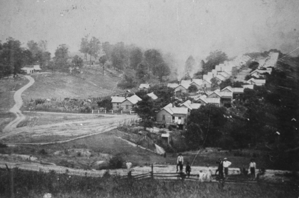

Congo is really more a semi-ghost town than an actual broken-window, banging-shutter ghost town. People still live there. It might not have a post office, but it does have a couple of churches and a bunch of fairly run-of-the-mill houses (no offense to anybody who lives in Congo).

The Mine at Congo
Congo's history is far more interesting than it might appear today. It was one of a dozen or so company towns in Perry County, built by the Sunday Creek Coal Company to house its workers near the mines.

Company Housing in Congo
Congo got its name, in part, because the coal companies tended to segregate their workers, and this was where many of the black miners got sent--many of whom were actually imported from Africa. North of Columbus is a forgotten town called Africa, named for much the same reason.

Newspaper Clipping
Congo is part of the Black Diamonds Coal Region, which includes San Toy. On a trip to the San Toy area, my friend Jesus, my girlfriend, and I decided to stop off and see the place. It's fairly out of the way, located down a long and twisting road from the highway. If you take the back route you'll drive by one of the prettiest rivers I've ever seen, replete with cliffs and crags formed by blasting.

Just past the main route to Congo we stopped to explore what we thought was an abandoned store located next to a still-occupied house. I found out later that it was actually a bar called Stenson's, which served the working men and women of Congo from the nineteenth century through the 1980s. Click below to see pictures from the abandoned bar.

Stenson's Bar
After we explored the house we climbed a very steep hill and discovered the ruins of some sort of big building with numerous coal furnaces and chimneys. My assumption that it was associated with the mining industry in some way turns out to be wrong; it was the school.

Congo School Ruins
Congo is the sort of out-of-the-way place most people never even think about, much less visit. The woods there are amazingly unspoiled, especially to city kids like us, and the past still has a strong presence. I've been lucky enough to hear from a few current and former Congo residents, and they've all been extremely pleasant and helpful. Check their town out sometime.
Back
forgottenohio@yahoo.com